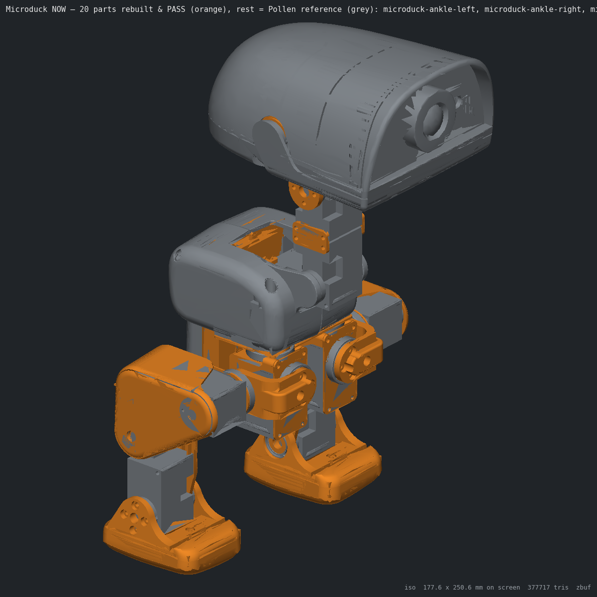
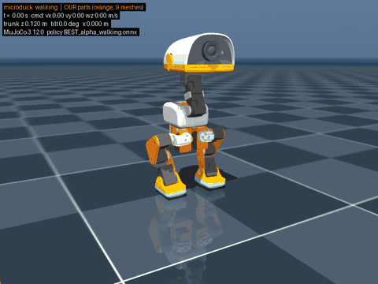
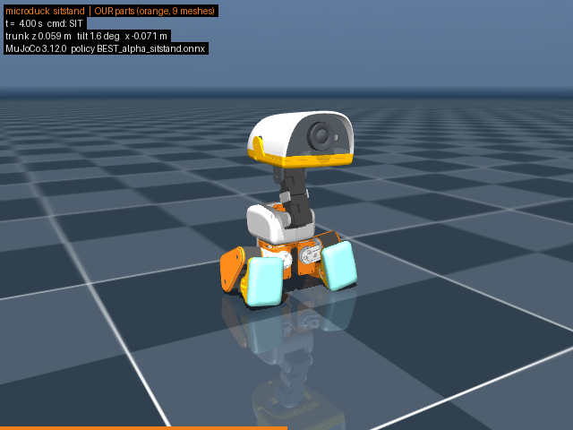
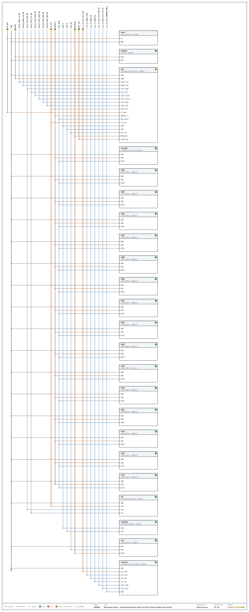
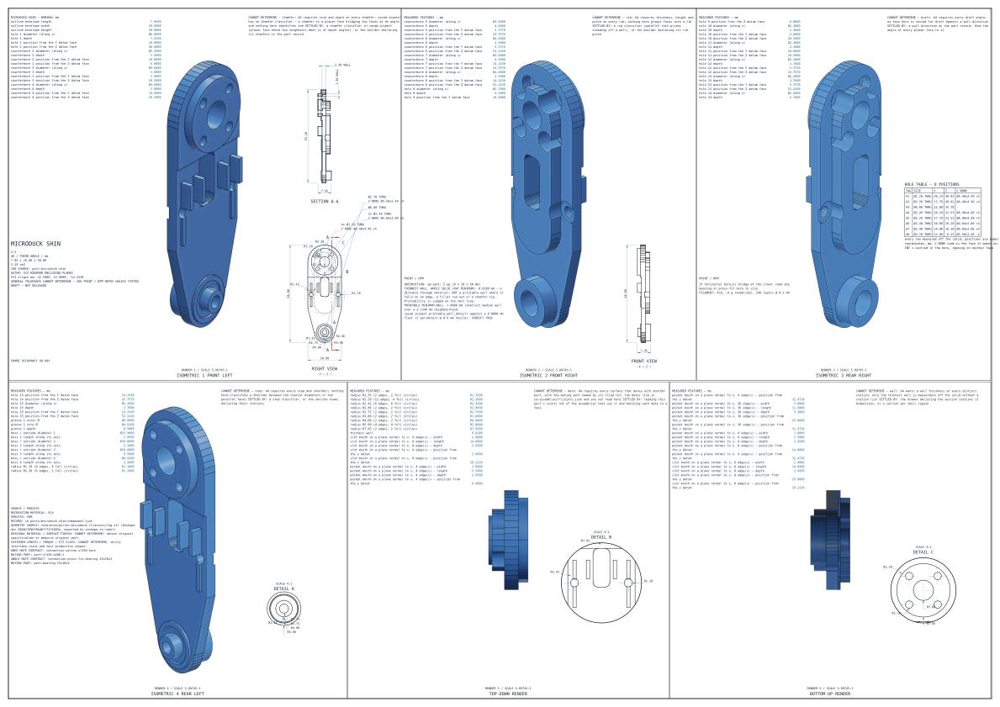
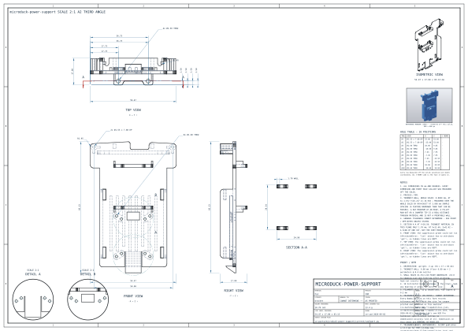
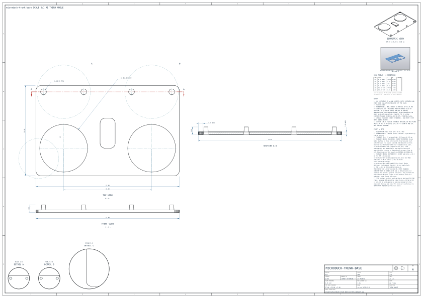

Everything needed to make this robot: the geometry on the triad shelf, the electronics and the software that drives them, the wiring, the blueprints, the print plates with real slicer numbers, and the shopping list — every figure carrying its source, every unknown named.

MuJoCo 3.12 running Pollen's own published policies on the published model, with our rebuilt meshes swapped in. Observation layout, 50 Hz loop and STAND keyframe mirror infer_policy.py. Independently re-run and bit-identical.

out/sim/walk.mp4, walk.gif
out/sim/sitstand.mp4, stand.mp4Live files: walk.mp4 · sitstand.mp4 · stand.mp4 · report.md · how to run
One half-duplex TTL bus carries all fifteen servos plus the IMU board; everything else hangs off the Radxa's I²C3, I²S3 and CSI through the custom HAT. Solid lines are published facts (file-cited in docs/ELECTRONICS-AND-SOFTWARE.md); dashed are inferred or unknown.
flowchart TB
subgraph HEAD["HEAD (MJCF body jaw_soft, 188.8 g)"]
RADXA["Radxa Zero 3W\nRK3566 · 1 GB · 32 GB eMMC\nWi-Fi 6 / BT 5.4 · 65×30 mm"]
HAT["Pollen RPI Robot HAT\n65×30×0.84 mm, on the 40-pin header\n(custom PCB, not published)"]
CODEC["TLV320AIC3104\nI2C 0x18 · I2S3"]
BMI["BMI088 (dormant)\nI2C 0x19 / 0x68"]
J5["Stemma J5"]
TOF["VL53L5CX / VL53L8CX\n8x8 ToF · I2C 0x29 · 15 Hz"]
CAM["IMX219 + M12 lens\nupside down, rotation 180"]
MIC["mic(s)"]
SPK["speaker 35×25×7"]
S33["XL330 ID 33 head_roll"]
S34["XL330 ID 34 mouth"]
NFC1["NFC antenna (head)"]
NFC2["NFC antenna (beak)"]
LED["REC indicator LED"]
end
subgraph NECK["NECK / HEAD LINKS"]
S30["ID 30 neck_pitch"]
S31["ID 31 head_pitch"]
S32["ID 32 head_yaw"]
end
subgraph TRUNK["TRUNK (body trunk_base, 199.2 g)"]
BAT["NP-F550 2S Li-ion\n2600 mAh · 6.6–8.2 V under load"]
BANANA["banana battery-contact PCB"]
IMU["imu_to_dxl v2\nLSM6DSV16X · DXL ID 200"]
S20["ID 20 L hip_yaw"]
S10["ID 10 R hip_yaw"]
end
subgraph LEGL["LEFT LEG"]
S21["21 hip_roll"] --- S22["22 hip_pitch"] --- S23["23 knee"] --- S24["24 ankle"]
end
subgraph LEGR["RIGHT LEG"]
S11["11 hip_roll"] --- S12["12 hip_pitch"] --- S13["13 knee"] --- S14["14 ankle"]
end
RADXA -- "40-pin header" --- HAT
RADXA -- "UART2 M0 → /dev/ttyS2\n1 Mbps · Dynamixel Protocol 2" --> BUS(("TTL half-duplex bus\n16 devices"))
HAT -. "transceiver on HAT (inferred, [C-elec])" .- BUS
RADXA -- "22-pin MIPI CSI\nI2C addr 0x10" --> CAM
HAT -- "I2C3 M0, header pins 3/5\nGPIO1_A0 SDA · GPIO1_A1 SCL · 400 kHz\n10k pull-ups R12/R13" --> CODEC
HAT --> BMI
HAT --> J5 --> TOF
RADXA -- "I2S3 (i2s3_2ch)\nMCLK 12 MHz · sysclk 12.288 MHz" --> CODEC
CODEC -- "Mic3R (mono, [C-elec])" --- MIC
CODEC -- "line out" --- SPK
BUS --> IMU
BUS --> S20 & S10 & S30 & S31 & S32 & S33 & S34
BUS --> S21 & S11
BAT --- BANANA -- "battery → HAT → board\n(i2c3.dts)" --> HAT
USB["USB-C 5 V\nFUSB302 PD disabled"] --> RADXA
RADXA -. "GPIO? CANNOT DETERMINE" .- LED
NFC1 -. "reader IC / bus: CANNOT DETERMINE" .- HAT
NFC2 -. "CANNOT DETERMINE" .- HAT
Live files: ELECTRONICS-AND-SOFTWARE.md · PARTS.md · electronics/
| bus | devices | IDs → joints | boot registers (robotd) | loop |
|---|---|---|---|---|
| /dev/ttyS2 1 Mbps · Protocol 2.0 |
15 × XL330 + imu_to_dxl (ID 200) | 20–24 L leg (hip yaw/roll/pitch, knee, ankle) 30–34 head (neck, head pitch/yaw/roll, mouth) 10–14 R leg · mouth ID 34 not in the policy |
return_delay 0 · baud 3 pwm_slope 255 · shutdown 52 |
50 Hz sync_read 124–136 1 Hz read 144–146 P gain 200 (standing ×0.8, limp 50) |
| part | what | datasheet | status |
|---|---|---|---|
| xl330-m288-t | servo ×15 — e-Manual + drawing + STEP fetched, sha256'd | ROBOTIS e-Manual | runs at 6.6–8.2 V vs 3.7–6.0 V published band |
| lsm6dsv16x | control IMU on imu_to_dxl v2, bus ID 200, SFLP quaternion | ST DS13510 Rev 4, 198 pp | quoted verbatim, page-cited |
| radxa-zero-3w | RK3566 · 1 GB · 32 GB — compute, in the head | Radxa wiki + product brief | 1GB/32GB SKU absent from Radxa's own table |
| vl53l5cx / l8cx | 8×8 ToF, I²C 0x29, 15 Hz | ST | generation not stated — both drivers vendored |
| tlv320aic3104 | audio codec, I²C 0x18, I²S3, MCLK 12 MHz | TI | on the shelf |
| imx219 + M12 | camera, CSI, mounted upside-down | Sony/Arducam | exact module + lens FOV provisional |
| np-f550 | 2S Li-ion 2600 mAh, removable, 6.6–8.2 V window, no fuel gauge | retail listings | 18.72 Wh — “small” in every shipping regime |
| robot-hat / imu_to_dxl / banana PCB | Pollen's three custom boards | — | unpublished — our reconstruction in progress |
robotd owns the bus and the 50 Hz policy loop · mediad camera → WebRTC console · tofd the 8×8 ToF · btd/padd Bluetooth + gamepad · configd · updaterd signed releases with health-gated rollback.
obs[61] = gyro 3 · projected gravity 3 · joint pos 14 · joint vel 14 · last action 14 · command 13 → act[14] position targets. ONNX, normaliser baked in. Nine published policies (walk, stand, sit-stand, kicks, roulade, rollers…).
Fall verdict on projected gravity, debounced 0.2 s; predictive limp at ~26° tilt drops gains to 50. Battery is read from the servos' own register 144; at 6.6 V smoothed the robot sits down and powers off.
Armbian on the Radxa Zero 3W (kernel 6.1 rk35xx), NPU runs a yolo11n duck detector at 2 Hz (thermal limit). Everything cited to file:line in docs/ELECTRONICS-AND-SOFTWARE.md.
Chain order follows the MJCF tree: HAT → head servos 34→30 → IMU board → both legs. Every length is a measured route floor through the crossed joints plus a stated slack rule (10 mm per rad of joint range); independently recomputed to <0.05 mm.
21 AWG @ 8.2 V: far ankle 7.65 V — PASS
21 AWG @ 6.6 V: far ankle 6.05 V — PASS (far servo trips the empty threshold first)
22 AWG @ 8.2 V: drop 0.69 V — PASS
The CSI ribbon crosses no joint (camera, HAT and compute all live in the head). What crosses joints is the battery feed: trunk → head through neck pitch, head pitch, yaw ±170° and roll — 720° of accumulated range on one 340 mm power cable.

wiring/drop.json · ce-wire check: 53 PASS, 0 FAIL, 18 CANNOT DETERMINE (unpublished currents and audio pin vocabulary).Every parametric rebuild gets a third-angle sheet with sections and a hole table, then the SVG is parsed back and checked against the solid (verify_sheet). Mesh-backed vendor parts are deliberately not drawn — a decimated mesh has no dimensions to call out.



shin · trunk-base · banana-pcb-locker · power-support · bearing-roll · yaw2roll · hip-bracket · upper-leg L/R · rigidity plate
DXF + SVG + PDF each, under out/drawings/ with INDEX.md and a machine-readable result.json per sheet.
From the construction manual, built off the measured joints and placements. Rules that bind every step: set each servo's ID and baud before it joins the bus; all bearings press-fit into printed seats; no screw list is published, so every M2 count is community-derived and flagged.
PLA 26 parts · 32 pieces · 218.29 g · 9.93 h
TPU 4 pieces (soles + beak lips) · 26.20 g · 2.41 h
Two ready plates: microduck-PLA.3mf, microduck-TPU.3mf (PRINT.md) — bed-verified 340 × 320. Nothing was sent to a printer.
docs/production/process.md)1–10 units: print in-house. 100: print at a farm, mould nothing. 1 000: mould the 9 visible shells (tooling floor ≈ $13.5–90 k), keep the 22 small brackets printed. Pollen itself: made with Seeed in Shenzhen against a >20 000-unit target (Bloomberg).
From out/release/bom.csv and docs/production/components.md; every price was read at the linked vendor on 2026-09-02. A price nobody read is CANNOT DETERMINE, never a guess.
| item | qty | unit | vendor | note |
|---|---|---|---|---|
| Dynamixel XL330-M288-T | 15 | $23.90 | ROBOTIS intl | the whole cost story — $358.50, no volume tiers published |
| X3P servo cable 10-pack | 2 | $15.50 | ROBOTIS | 16 hops needed |
| Radxa Zero 3W 1 GB/32 GB | 1 | CANNOT DETERMINE | — | SKU absent from Radxa's own table; nearest 1 GB/8 GB $23, sold out |
| NP-F550 pack (+ shared dual charger) | 1 | $24.95 | NextBatteries | 2-pack + charger $49.90 |
| IMX219 M12 camera board + lens | 1 | $23.99 | UCTRONICS / Arducam B0183 | exact production module unknown |
| ToF 8×8 breakout (VL53L8CX) | 1 | $24.95 | Pololu #3419 | bare chip $8.77 at volume |
| Bearing 22×16×4 (MR1622-ZZ) | 11 | NZD 5.90 | NZ Miniature Bearings | US$1–4 at MOQ 1 000 |
| Bearing 15×10×3 (MR6700) | 3 | $4.86 | Bearings Direct | |
| M2 screws ≈195 + 60 inserts | — | ≈ €8.5 + $7.2 | RST / Prusa | counts community-derived, flagged |
| Codec TLV320AIC3104 (for HAT build) | 1 | $2.25 | LCSC | $1.23 @1000 |
| Speaker 35×25×7 · mics · NFC · REC LED · CSI ribbon | — | CANNOT DETERMINE | — | parts not identified in any published source |
| 3 custom PCBs (HAT, imu_to_dxl, battery contacts) | 3 | CANNOT DETERMINE | — | no design files published — our HAT reconstruction in progress |
| Filament: 218 g PLA + 26 g TPU | — | ≈ $6–8 | — | sliced grams × typical spool price |
$472–481 at every quantity 1→1000 (+ ≈NZD 65 bearings, ≈€8.5 screws) — already above Pollen's $399 retail before compute, custom boards, filament, labour or margin.
The servos are 75 % of the readable cost and ROBOTIS publishes no tiers — the entire volume question is one OEM quote. Assembly labour: 36–101 min/unit by Boothroyd-Dewhurst count.
Battery 18.72 Wh → UN3481 PI967 Section II installed (no mark ≤2 packs); charger pack alone → UN3480 IB, cargo-only. CE: RED + EN 18031 cyber articles now apply; RoHS/WEEE; details in docs/production/compliance-and-assembly.md.
This repo carries the product; the tools that build and grade it live in ce-cad and are pinned by commit in TOOLCHAIN.md. Lifting the repo out orphans nothing: geometry, evidence, drawings, plates, videos and the release package are all inside it.
| what | where | notes |
|---|---|---|
| This project — everything about the duck | ~/dev/ce-workshop/ce-designs/microduck github.com/Leif-Rydenfalk/microduck (private) | its own git repo AND a triad root: ce-parts/ · ce-connections/ · ce-assemblies/ · reference/ · research/ · docs/ · wiring/ · sim/ · out/ — all committed |
| The CAD system (the tool) | ~/dev/ce-workshop/ce-cad · bin/cad github.com/Leif-Rydenfalk/ce-workshop | proprietary, deliberately NOT vendored into this repo; pinned by commit |
| Written for this project, now part of ce-cad | cecad/mjcf.py · meshview.py · meshcompare.py meshfeatures.py · meshslice.py · meshshelve.py · mjcfseed.py bin/cad-mjcf · bin/cad-refcheck | MJCF forward kinematics, z-buffer mesh renderer with crease-angle smoothing, p95 surface grading, hole/boss reading off meshes, cut-plane calipers, mesh-backed shelving, assembly seeding |
| Repo-local scripts (this design only) | tools/ · sim/ · workflows/ | the PASS watcher, the whole-duck render, the MuJoCo lane, the workflow lane scripts |
| Kernel + interpreters | FreeCAD 1.1.3 (bin/cad) · bundled python 3.11 + mujoco 3.12, onnxruntime, imageio-ffmpeg | the one env line: CE_TRIAD_ROOT="$repo:$HOME/dev/ce-workshop" |
| The release package | out/release/ | bin/deliver writes it INTO the repo and it is committed: per-part STEP/STL/drawing/spec, bom.csv, print list, manual, sha-256 MANIFEST — being generated now |
| rung | verdict | proof |
|---|---|---|
| Every part on the shelf | DONE BY DECISION | meshes primary (“use it directly”); 20 rebuilds PASS ≤1 mm p95 replace their slugs |
| Assembly builds in the kernel | PASS | 70/70 placements, 144×150×264 mm measured |
| Animated, open-source sim | PASS · verified | walk / sit-stand / stand videos, independent re-run bit-identical |
| Electronics | PARTIAL | datasheets + netlist done; HAT PCB reconstruction running |
| Wiring | PASS · verified | 22 cables re-measured independently to <0.05 mm |
| Manufacturing package | PARTIAL | drawings + plates + manual + BOM done; bin/deliver package running |
| Production research | PASS | 155 sources, docs/PRODUCTION.md |